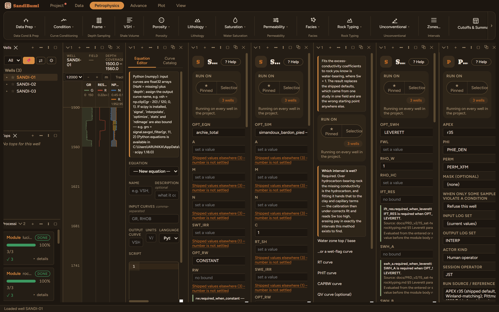

Pittman Pore-Throat Radii (r10–r75)
Pittman's pore-throat aperture family: the pore-throat radius at each mercury-saturation level from 10 to 75 percent, from porosity and permeability. The apex radius is the one that best correlates with permeability for the rock family, and its Hartmann-Beaumont port class is written beside it.
log₁₀ rX = C0 + C1·log₁₀k + C2·log₁₀φ% (k mD, φ percent, r µm) Port classes: nano < 0.1 < micro < 0.5 < meso < 2.5 < macro < 10 ≤ mega (µm)
References
- Pittman, E.D. (1992), AAPG Bulletin v76 no.2, 191-198; Table 1 in full, verified against the paper
The paper's own cautions ride along: correlation falls with saturation (0.926 at r20 to 0.820 at r75), and the family is non-monotone below ~11% porosity; that is the published arithmetic, not an implementation artifact.
Step by step: Pittman's pore-throat radii
Pittman regressed pore-throat radius against porosity and permeability at every mercury-saturation level from 10 to 75 percent; this module writes the whole family (PR10..PR75), plus the radius at your chosen APEX saturation and its Hartmann-Beaumont port class. The coefficients are Pittman's Table 1 in full, verified against the paper, including the parts of the paper most implementations quietly drop.
The one choice: APEX
r35, the shipped default, matches the Winland concept and suits coarser rock; finer families apex nearer r50–r75. The honest way to choose is the paper's own: pick the rX that best correlates with permeability for your rock family. Inputs are PHIE_DEN and PERM_XFM by name, as across this shelf.

Run and read
On these wells: 3 clean; the sand-interval median RAPEX is 0.79 µm, a meso port class. Two cautions ride with every output, and both are the paper's own arithmetic rather than this implementation's: the correlation weakens as saturation rises (0.926 at r20 down to 0.820 at r75), and the family is non-monotone below about 11% porosity. The module does not "correct" either, because a published table quietly reshaped stops being citable. The caution belongs in the reading, not in the coefficients.
What the application enforces
Everything below is generated from the same manifest the application builds this module’s pane from — descriptions, defaults, sources, ranges and pre-run checks here are exactly what the running application enforces.
Pittman (1992) pore-throat aperture family: writes PR10..PR75 = pore-throat radius (µm) at mercury saturation 10..75 %, each log10 rX = C0 + C1·log10 k + C2·log10 φ% (k mD, φ in PERCENT). RAPEX is the radius at the chosen APEX saturation and RT_PITT its Hartmann-Beaumont port class (nano<0.1, micro 0.1–0.5, meso 0.5–2.5, macro 2.5–10, mega ≥10 µm → 1..5). Pick APEX = the rX that best correlates with k for your rock family (coarse rocks apex near r25–r35, finer near r50–r75); r35 is the common default and matches the Winland concept. Samples with φ∉(0,1) or k≤0 stay MISSING. Coefficients are Pittman (1992, AAPG Bull. v76 no.2 p191–198) Table 1, verified against the paper. Two cautions, both the paper's own arithmetic rather than this implementation's. (1) The correlation coefficient falls with saturation (0.926 at r20 down to 0.820 at r75) and Pittman states the accuracy diminishes above the 55th percentile, so PR75 is the weakest row of the family. (2) The rows are INDEPENDENT regressions whose porosity exponent steepens from -0.385 at r10 to -2.626 at r75, so in TIGHT rock the high-saturation rows overtake the low ones: below about 11 % porosity the family stops falling monotonically and PR50/PR75 turn back upward (at 5 % porosity, 1 mD: PR40 = 0.77 um but PR50 = 0.86 and PR75 = 1.11). Use a LOW APEX in tight rock — r25-r35, where Pittman's own porosity term is statistically insignificant — and treat PR50/PR75 there as extrapolation. Nothing is clamped, because forcing the ordering would report radii the paper never published. k is UNCORRECTED air permeability; feeding a Klinkenberg-corrected k gives throats that are too small.
Input curves
| Role | Description | Resolves to | Required | Notes |
|---|---|---|---|---|
| PHI | Effective porosity | PHIE | yes | — |
| PERM | Permeability | PERM | yes | — |
Options
APEX
Controlling mercury-saturation radius for RT (port class)
- Choices:
r10r15r20r25r30r35r40r50r75
- Default:
r35
Output curves
| Name | Description |
|---|---|
| PR10 | Pittman pore-throat radius at 10 % Hg |
| PR15 | Pittman pore-throat radius at 15 % Hg |
| PR20 | Pittman pore-throat radius at 20 % Hg |
| PR25 | Pittman pore-throat radius at 25 % Hg |
| PR30 | Pittman pore-throat radius at 30 % Hg |
| PR35 | Pittman pore-throat radius at 35 % Hg |
| PR40 | Pittman pore-throat radius at 40 % Hg |
| PR50 | Pittman pore-throat radius at 50 % Hg |
| PR75 | Pittman pore-throat radius at 75 % Hg |
| RAPEX | Radius at the chosen APEX saturation |
| RT_PITT | Port class of RAPEX (1..5) |